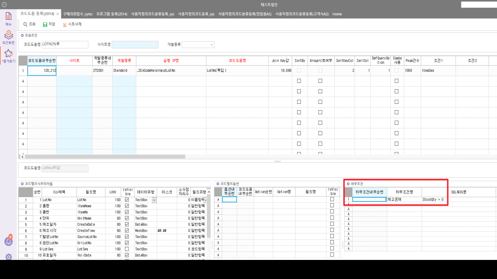
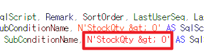

패치 시 > 문구 glt로 반영
'StockQty > 0' ===> 'StockQty \> 0' 잘못 패치
해당 건 update 시 _TCACodeHelpSubCondition 테이블의 SqlScript 뿐만 아니라 LastDateTime도 바꿔줘야한다


'StockQty > 0' ===> 'StockQty \> 0' 잘못 패치
해당 건 update 시 _TCACodeHelpSubCondition 테이블의 SqlScript 뿐만 아니라 LastDateTime도 바꿔줘야한다

